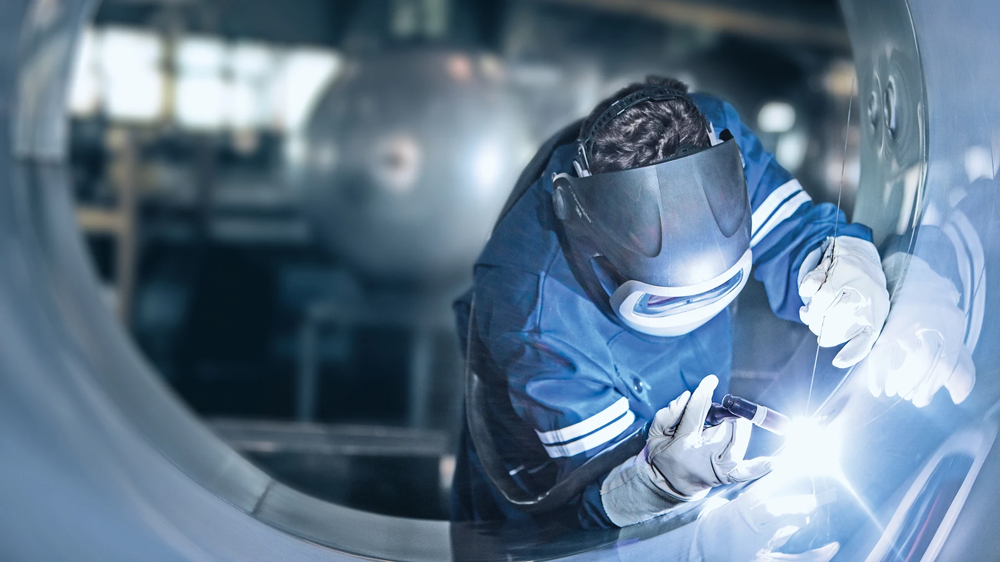
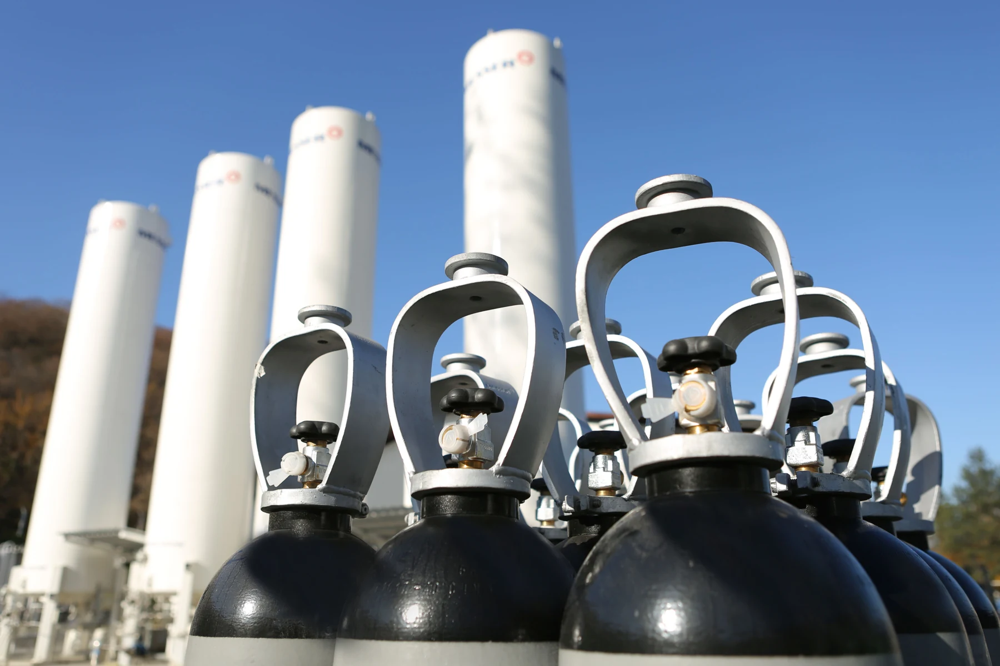

INKOM / INDUSTRIJSKI GASOVI I ZAVARIVANJE
Oprema za
industrijski rad.
Tehnički gasovi i oprema za zavarivanje.
Istražite kategorijuPREGLED / INDUSTRIJSKI GASOVI I ZAVARIVANJE
Od procesa do izbora opreme.
Pri izboru povežite vrstu materijala, postupak zavarivanja i uslove rada. Gasovi, aparat i pribor treba da odgovaraju konkretnom procesu.
01 / PROCES RADA
Proces rada
- Materijal
- Debljina
- Postupak
02 / ODGOVARAJUĆA OPREMA
Odgovarajuća oprema
- Aparat
- Tehnički gas
- Pribor
03 / PRIPREMA
Podaci za izbor
- Napajanje
- Režim rada
- Priključci
- Potreban gas



TEHNIČKI GASOVI
Prema potrebama
vašeg procesa.
Pripremite podatke o nameni, vrsti gasa i potrebnoj količini. Detalje isporuke proverite direktno.